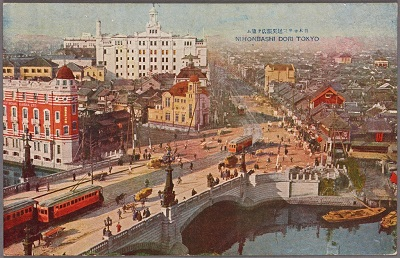

Home
Nihonbashi has been the heart of Tokyo, Japan for centuries. It is one of the major business districts in central Tokyo and the best place for anyone to visit. We have history, great communities, the best foods, quality goods, convenience, and safety all packed in such a small place, and there is so much to explore.
What makes Nihonbashi so unique and attractive is the fact that Nihonbashi is a place where classic and modern coexist. We have a community that values quality over quantity, which can be rare especially in the materialistic, disposable culture the world faces today. There are many businesses that are over a century old and still going strong, and they do their best to preserve the knowledge and traditions and pass on to the future generations.